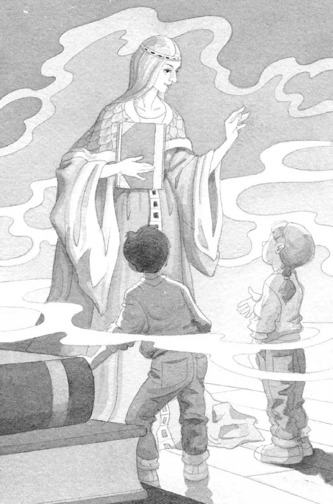

“谢谢你们。”仙女摩根轻声说道，“是你们把我从魔术师的咒语中解救了出来。”
杰克只是呆呆地看着仙女摩根。
“原来你就是花生米？”安妮问。
仙女摩根点点头，露出了微笑。
“真的？你一直跟我们在一起？”杰克问，“跟我们一起完成了所有那些任务？”
仙女摩根又点点头。
“既然你一直就在我们身边，”杰克说，“为什么我们还要千辛万苦地来月球找老鼠呢？”
“为了解除魔咒，我们必须到月球上去。”仙女摩根说，“其实在我们刚踏上月球的时候，你们就有机会把魔咒解除的。”
“噢，原来当时花生米站在‘M’上就是为了告诉我们这个呀！”安妮说，“其实我们根本不用离开月球基地的。”
仙女摩根微笑着点点头。
“幸好那个月球人提醒了我们。”安妮说，“他画了一个老鼠星座！他是你的朋友吗？”
仙女摩根耸了耸肩说：“我们也就随便聊了几句。你们在月球上找东西的时候，他正好在月球基地停留了一下。”
“就像你那次跟忍者大师随便聊了几句一样，对吗？”杰克问，“还有那只小猴子和那个巫师？”
仙女摩根点点头，说：“我总是和帮助你们的人吱吱说话。”
“可是他们怎么听得懂你的话呢——你是一只老鼠啊！”杰克不解地说。
仙女摩根又笑了笑说：“一些智者能听懂小动物的话。”
“翻开那些书，提示下一站去哪儿的，肯定也是你！”安妮说。
仙女摩根点点头。
“那么，是谁把你变成老鼠的呢？”安妮问。

仙女摩根皱起了眉头。“一个专门喜欢搞恶作剧捉弄我的人，”她说，“他的名字叫梅林。”
“梅林！”杰克惊讶地说，“历史上最伟大的魔法师。”
仙女摩根哼了一声。“他才没有那么伟大，”她说，“他甚至不知道有两位勇敢的朋友在帮助我。”
“是我们吗？”安妮不好意思地问。
仙女摩根点点头，说：“我从心底里感谢你们俩。”
“不用谢。”杰克和安妮同时说道。
仙女摩根把宾夕法尼亚的书递给安妮。“现在准备好回家了吗？”她问。
“准备好了！”杰克和安妮异口同声地说。
安妮指着蛙溪树林的图片。“请带我们回家！”她说。
树屋开始旋转，越转越快。
然后，一切都静止了。
完完全全地静止不动了。
但，只是静止了那么一小会儿。